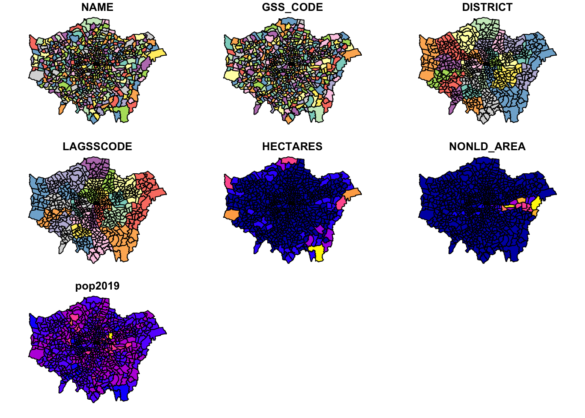

5 Programming for Spatial Analysis
This week we are going to look at how to use R and RStudio as a piece of GIS software. Like last week, we will be completing an analysis of our theft crime data set in London. However, rather than solely looking at crime change over time, we are going to add in a spatial component to our analysis: how has crime changed across our wards over the year.
5.1 Lecture recording
- Lecture W4
5.2 Reading list
- Reading #1
- Reading #2
5.3 Crime analysis II
To analyse crime by ward over time, we will go through several steps of data preparation (‘data wrangling’) before joining our data to ward polygons. Specifically, we will:
- Take our
all_theft_dfdataframe and wrangle it to produce a dataframe with a ward per row with a crime count for each month in our fields. - Join this dataframe to our
ward_population_2019shapefile (which should still be sitting in yourworkingfolder) and then produce a crime rate for each month, for each ward. - Create a map for January 2020 using the
tmaplibrary.
5.3.1 Data preparation
Before we get started, we first need to head back to our script from last week, run our script - and then write our all_theft_df to a csv file. If you had saved your environment from last week, keeping your variables in memory, theoretically you would not need to export the data frame as you should have access to this variable within your new script - but it would be good practice to write out the data and then load it back in.
- Open up RStudio (Server or Desktop), and make sure you open up your GEOG0030 project.
- Next open your script from last week - it should be saved as:
wk4-csv-processing.rand should be visible in your files from your GEOG0030 project. - Run your full script to and including the code that filters our large
all_crime_dfto only theall_theft_df. - Scroll to the bottom of the script and enter the following code and execute:
# write out the theft_crime_df to a csv within our raw crime data folder
write.csv(all_theft_df,"data/raw/crime/crime_theft_2020_london.csv", row.names = FALSE)Remember, if using a Windows machine, you will need to submit your forward-slashes (/) with two backslashes (\\) whenever you are dealing with file paths.
You should now see a new csv within your raw crime data folder (data/raw/crime).
- Save your
wk4-csv-processing.rscript and then close the script.
5.3.2 Spatial analysis set up
- Open a new script within your GEOG0030 project and save this script as
wk5-crime-spatial-processing.r. - At the top of your script, add the following metadata (substitute accordingly):
# Analysing crime in 2020 by month and ward
# Date: January 2021
# Author: Justin - Using the R console, install the following new libraries:
# install libraries
install.packages(c('sf','tmap','janitor'))- Now let us add all of the libraries we will be using today to the top of our script:
# libraries
library(tidyverse)
library(sf)
library(tmap)You are already familiar with the tidyverse library, but now we adding sf to read and load our spatial data as well as tmap to visualise our spatial data. We are going to load both of the data sets we need today straight away: 1) the crime_theft_2020_london.csv we have just exported and 2) the ward_population_2019.shp we created in Week 3.
- First, let’s load our
crime_theft_2020_london.csvinto a dataframe calledall_theft_df.
# read in our crime_theft_2020_london csv from our raw crime data folder
all_theft_df <- read_csv("data/raw/crime/crime_theft_2020_london.csv")We can double-check what our csv looks like by either viewing our data or simply calling the head() function on our dataframe.
- Call the
head()function on our data to check the first five rows:
# check the first five rows of our all_theft dataframe
head(all_theft_df)## # A tibble: 6 × 12
## crime_id month reported_by falls_within longitude latitude location lsoa_code
## <chr> <chr> <chr> <chr> <dbl> <dbl> <chr> <chr>
## 1 37c663d8… 2020… City of Lo… City of Lon… -0.106 51.5 On or n… E01000916
## 2 dcfa16f9… 2020… City of Lo… City of Lon… -0.0941 51.5 On or n… E01000002
## 3 be9310ed… 2020… City of Lo… City of Lon… -0.0945 51.5 On or n… E01000003
## 4 0cbb0c51… 2020… City of Lo… City of Lon… -0.0945 51.5 On or n… E01000003
## 5 aaafbcff… 2020… City of Lo… City of Lon… -0.0750 51.5 On or n… E01000005
## 6 8249cc17… 2020… City of Lo… City of Lon… -0.0750 51.5 On or n… E01000005
## # … with 4 more variables: lsoa_name <chr>, crime_type <chr>,
## # last_outcome_category <chr>, context <lgl>You should see these rows display in your console. Great, the data set looks as we remember, with the different fields, including, importantly for this week, the LSOA code which we will use to process and join our data together.
Next, let’s add our ward_population_2019.shp. We will store this as a variable called ward_population and use the sf library to load the data:
# read in our ward_population_2019 shp from our working data folder
ward_population <- st_read("data/working/ward_population_2019.shp", stringsAsFactors = FALSE)## Reading layer `ward_population_2019' from data source
## `/Users/justinvandijk/Dropbox/UCL/Web/jtvandijk.github.io/GEOG0030/data/working/ward_population_2019.shp'
## using driver `ESRI Shapefile'
## Simple feature collection with 657 features and 7 fields
## Geometry type: POLYGON
## Dimension: XY
## Bounding box: xmin: 503568.2 ymin: 155850.8 xmax: 561957.5 ymax: 200933.9
## Projected CRS: OSGB 1936 / British National GridYou should now see the ward_population variable appear in your environment window.
5.3.3 Interacting with spatial data
As this is the first time we have loaded spatial data into R, let’s go for a little exploration of how we can interact with our spatial data frame. The first thing we want to do when we load spatial data is, of course, map it to see its ‘spatiality’ or rather how the data looks from a spatial perspective. To do this, we can use a really simple command from R’s base library: plot(). As we do not necessarily want to plot this data everytime we run this script in the future, we will type this command into the console as a “one-off”.
In your console, plot our new spatial data:
# plot our ward_population data
plot(ward_population)
You should see your ward_population plot appear in your Plots window - as you will see, your ward data set is plotted ‘thematically’ by each of the fields within the dat aset, including our pop2019 field we created last week.
Note
This plot() function is not to be used to make maps - but simply as a quick way of viewing our spatial data.
We can also find out more information about our ward_population data.
- Let’s next check out our class of our data. Again, in the console type:
# find out the class of our ward_population data
class(ward_population)## [1] "sf" "data.frame"We should see our data is an sf dataframe, which is great as it means we can utilise our tidyverse libraries with our ward_population. We can also use the attributes() function we looked at last week to find out a little more about the spatial part of our data frame.
- Again, in the console type:
# find out the attributes of our ward_population data
attributes(ward_population)## $names
## [1] "NAME" "GSS_CODE" "DISTRICT" "LAGSSCODE" "HECTARES"
## [6] "NONLD_AREA" "pop2019" "geometry"
##
## $row.names
## [1] 1 2 3 4 5 6 7 8 9 10 11 12 13 14 15 16 17 18
## [19] 19 20 21 22 23 24 25 26 27 28 29 30 31 32 33 34 35 36
## [37] 37 38 39 40 41 42 43 44 45 46 47 48 49 50 51 52 53 54
## [55] 55 56 57 58 59 60 61 62 63 64 65 66 67 68 69 70 71 72
## [73] 73 74 75 76 77 78 79 80 81 82 83 84 85 86 87 88 89 90
## [91] 91 92 93 94 95 96 97 98 99 100 101 102 103 104 105 106 107 108
## [109] 109 110 111 112 113 114 115 116 117 118 119 120 121 122 123 124 125 126
## [127] 127 128 129 130 131 132 133 134 135 136 137 138 139 140 141 142 143 144
## [145] 145 146 147 148 149 150 151 152 153 154 155 156 157 158 159 160 161 162
## [163] 163 164 165 166 167 168 169 170 171 172 173 174 175 176 177 178 179 180
## [181] 181 182 183 184 185 186 187 188 189 190 191 192 193 194 195 196 197 198
## [199] 199 200 201 202 203 204 205 206 207 208 209 210 211 212 213 214 215 216
## [217] 217 218 219 220 221 222 223 224 225 226 227 228 229 230 231 232 233 234
## [235] 235 236 237 238 239 240 241 242 243 244 245 246 247 248 249 250 251 252
## [253] 253 254 255 256 257 258 259 260 261 262 263 264 265 266 267 268 269 270
## [271] 271 272 273 274 275 276 277 278 279 280 281 282 283 284 285 286 287 288
## [289] 289 290 291 292 293 294 295 296 297 298 299 300 301 302 303 304 305 306
## [307] 307 308 309 310 311 312 313 314 315 316 317 318 319 320 321 322 323 324
## [325] 325 326 327 328 329 330 331 332 333 334 335 336 337 338 339 340 341 342
## [343] 343 344 345 346 347 348 349 350 351 352 353 354 355 356 357 358 359 360
## [361] 361 362 363 364 365 366 367 368 369 370 371 372 373 374 375 376 377 378
## [379] 379 380 381 382 383 384 385 386 387 388 389 390 391 392 393 394 395 396
## [397] 397 398 399 400 401 402 403 404 405 406 407 408 409 410 411 412 413 414
## [415] 415 416 417 418 419 420 421 422 423 424 425 426 427 428 429 430 431 432
## [433] 433 434 435 436 437 438 439 440 441 442 443 444 445 446 447 448 449 450
## [451] 451 452 453 454 455 456 457 458 459 460 461 462 463 464 465 466 467 468
## [469] 469 470 471 472 473 474 475 476 477 478 479 480 481 482 483 484 485 486
## [487] 487 488 489 490 491 492 493 494 495 496 497 498 499 500 501 502 503 504
## [505] 505 506 507 508 509 510 511 512 513 514 515 516 517 518 519 520 521 522
## [523] 523 524 525 526 527 528 529 530 531 532 533 534 535 536 537 538 539 540
## [541] 541 542 543 544 545 546 547 548 549 550 551 552 553 554 555 556 557 558
## [559] 559 560 561 562 563 564 565 566 567 568 569 570 571 572 573 574 575 576
## [577] 577 578 579 580 581 582 583 584 585 586 587 588 589 590 591 592 593 594
## [595] 595 596 597 598 599 600 601 602 603 604 605 606 607 608 609 610 611 612
## [613] 613 614 615 616 617 618 619 620 621 622 623 624 625 626 627 628 629 630
## [631] 631 632 633 634 635 636 637 638 639 640 641 642 643 644 645 646 647 648
## [649] 649 650 651 652 653 654 655 656 657
##
## $class
## [1] "sf" "data.frame"
##
## $sf_column
## [1] "geometry"
##
## $agr
## NAME GSS_CODE DISTRICT LAGSSCODE HECTARES NONLD_AREA pop2019
## <NA> <NA> <NA> <NA> <NA> <NA> <NA>
## Levels: constant aggregate identityWe can see how many rows we have, the names of our rows and a few more pieces of information about our ward_population data - for example, we can see that the specific $sf_column i.e. our spatial information) in our data set is called geometry.
We can investigate this column a little more by selecting this column within our console to return.
- In the console type:
# get info about the geometry of our ward_population data
ward_population$geometry## Geometry set for 657 features
## Geometry type: POLYGON
## Dimension: XY
## Bounding box: xmin: 503568.2 ymin: 155850.8 xmax: 561957.5 ymax: 200933.9
## Projected CRS: OSGB 1936 / British National Grid
## First 5 geometries:You should see new information about our geometry column display in your console.
From this selection we can find out the dataset’s:
- geometry type
- dimension
- bbox (bounding box)
- CRS (coordinate reference system)
And also the first five geometries of our data set.
This is really useful as one of the first things we want to know about our spatial data is what coordinate system it is projected with.
As we should know, our ward_population data was created and exported within British National Grid, therefore seeing the EPSG code of British National Grid - 27700 - as our CRS confirms to us that R has read in our data set correctly.
We could also actually find out this information using the st_crs() function from the sf library.
# find out the CRS of our ward_population data
st_crs(ward_population)## Coordinate Reference System:
## User input: OSGB 1936 / British National Grid
## wkt:
## PROJCRS["OSGB 1936 / British National Grid",
## BASEGEOGCRS["OSGB 1936",
## DATUM["OSGB 1936",
## ELLIPSOID["Airy 1830",6377563.396,299.3249646,
## LENGTHUNIT["metre",1]]],
## PRIMEM["Greenwich",0,
## ANGLEUNIT["degree",0.0174532925199433]],
## ID["EPSG",4277]],
## CONVERSION["British National Grid",
## METHOD["Transverse Mercator",
## ID["EPSG",9807]],
## PARAMETER["Latitude of natural origin",49,
## ANGLEUNIT["degree",0.0174532925199433],
## ID["EPSG",8801]],
## PARAMETER["Longitude of natural origin",-2,
## ANGLEUNIT["degree",0.0174532925199433],
## ID["EPSG",8802]],
## PARAMETER["Scale factor at natural origin",0.9996012717,
## SCALEUNIT["unity",1],
## ID["EPSG",8805]],
## PARAMETER["False easting",400000,
## LENGTHUNIT["metre",1],
## ID["EPSG",8806]],
## PARAMETER["False northing",-100000,
## LENGTHUNIT["metre",1],
## ID["EPSG",8807]]],
## CS[Cartesian,2],
## AXIS["(E)",east,
## ORDER[1],
## LENGTHUNIT["metre",1]],
## AXIS["(N)",north,
## ORDER[2],
## LENGTHUNIT["metre",1]],
## USAGE[
## SCOPE["Engineering survey, topographic mapping."],
## AREA["United Kingdom (UK) - offshore to boundary of UKCS within 49°45'N to 61°N and 9°W to 2°E; onshore Great Britain (England, Wales and Scotland). Isle of Man onshore."],
## BBOX[49.75,-9,61.01,2.01]],
## ID["EPSG",27700]]You notice that we actually get a lot more information about our CRS beyond simply the code using this function. This function is really important to us as users of spatial data as it allows us to retrieve and set the CRS of our spatial data (the latter is used in the case the data does not come with a .proj file but we do know what projection system should be used).
The final thing we might want to do before we get started with our data analysis is to simply look at the data table part of our data set, i.e. what we called the Attribute Table in QGIS, but here it is simply the table part of our data frame. To do so, you can either use the View() function in the console or click on the ward_population variable within our environment.
5.3.4 Getting our crime data in shape
Now we have our data loaded, our next step is to process our data to create what we need as our final output for analysis: a spatial dataframe that contains a theft crime rate for each ward for each month in 2020. However, if we look at our all_theft_df, we do not have a field that contains the wards our crimes have occured in. We only have two types of spatial or spatially-relevant data in our all_theft_df:
- The approximate WGS84 latitude and longitude.
- The Lower Super Output Area (LSOA) in which the crime it occurred.
From Week 3’s practical, we know we can map our points using the coordinates and then provide a count by using a point-in-polygon (PIP) operation. However to do this for each month, we would need to filter our data set for each month and repeat the PIP operation - when we know a little more advanced code, this might end up being quite simple, but for now we will try to see if we can solve it differently.
5.3.4.1 Attribute join
To get the number of crimes that occurred in each ward, all we need to do is figure our which Ward our LSOAs fall within and then we can add this as an additional attribute or rather column to our all_theft_df.
From a GIScience perspective, there are many ways to do this - but the most straight forward is to use something called a look-up table. Look-up tables are an extremely common tool in database management and programming, providing a very simple approach to storing additional information about a feature (such as a row within a dataframe) in a separate table that can quite literally be “looked up” when needed for a specific application.
In our case, we will actually join our look-up table to our current all_theft_df to get this information “hard-coded” to our dataframe for ease of use. To be able to do this, we therefore need to find a look-up table that contains a list of LSOAs in London and the wards in which they are contained. Lucky for us, after a quick search of the internet, we can find out that the Office for National Statistics provides this for us in their Open Geography Portal. They have a table that contains exactly what we’re looking for: Lower Layer Super Output Area (2011) to Ward (2018) Lookup in England and Wales v3. As the description on the website tells us, “This file is a best-fit lookup between 2011 lower layer super output areas, electoral wards/divisions and local authority districts in England and Wales as at 31 December 2018.”
- Download the look-up table from the ONS: Link
- Move this file in your data -> raw -> boundaries folder and rename to
data/raw/boundaries/lsoa_ward_lookup.csv. - Load the dataset using the
read_csv()function. Do not worry if you have a few “parsing” failures, the table should still work fine.
# read in our lsoa_ward_lookup csv from our raw boundaries data folder
lsoa_ward_lookup <- read_csv("data/raw/boundaries/lsoa_ward_lookup.csv")Now we have our lookup table, all we are going to do is extract the relevant ward name and code for each of the LSOAs in our all_theft_df. To do so, we’re going to use one of the join functions from the dplyr library.
Note
We have already learnt how to complete Attribute Joins in QGIS via the Joins tab in the Properties window - so it should come of no surprise that we can do exactly the same process within R. To conduct a join between two dataframes (spatial or non-spatial, it does not matter), we use the same principles of selecting a unique but matching field within our dataframes to join them together.
Within R, you have two options to complete a data frame join:
- The first is to use the
baseR library and itsmerge()function:- By default the data frames are merged on the columns with names they both have, but you can also provide the columns to match separate by using the parameters:
by.xandby.y. - Your code would look something like:
merge(x, y, by.x = "xColName", by.y = "yColName"), withxandyeach representing a dataframe. - The rows in the two data frames that match on the specified columns are extracted, and joined together.
- If there is more than one match, all possible matches contribute one row each, but you can also tell merge whether you want all rows, including ones without a match, or just rows that match, with the arguments all.x and all.
- By default the data frames are merged on the columns with names they both have, but you can also provide the columns to match separate by using the parameters:
- The second option is to use the
dplyrlibrary:dplyruses SQL database syntax for its join functions.- There are four types of joins possible with the
dplyrlibrary.inner_join(): includes all rows that exist both withinxandy.left_join(): includes all rows inx.right_join(): includes all rows iny.full_join(): includes all rows inxandy.
- Figuring out which one you need will be on a case by case basis.
- Again, if the join columns have the same name, all you need is
left_join(x, y). - If they do not have the same name, you need a
byargument, such asleft_join(x, y, by = c("xName" = "yName")). Left of the equals is the column for the first data frame, right of the equals is the name of the column for the second data frame.
As we have seen from the list of fields above - and with our knowledge of our all_theft_df dataframe - we know that we have at least two fields that should match across the data sets: our lsoa codes and lsoa names. We of course need to identify the precise fields that contain these values in each of our data frames, i.e. LSOA11CD and LSOA11NM in our lsoa_ward_lookup dataframe and lsoa_code and lsoa_name in our all_theft_df dataframe, but once we know what fields we can use, we can go ahead and join our two data frames together.
We are going to need to make multiple joins between our tables as we have multiple entries of crime for the same LSOA - as a result, we are going to need to use a function that allows us to keep all rows in our all_theft_df dataframe, but we do not need to keep all rows in our lsoa_ward_lookup if those wards are not within our data set.
Let’s have a look in detail at how the four different types of joins from dplyr work:

It looks like we’re going to need to use our left_join() function as we want to join matching rows from our lsoa_ward_lookup dataframe to our all_theft_df dataframe but make sure to keep all rows in the latter.
- Within your script, create a join between our two dataframes and store as a new variable:
# join lsoa_ward_lookup rows to the all_theft_df on our two lsoa code fields
all_theft_ward_df <- left_join(all_theft_df, lsoa_ward_lookup, by = c("lsoa_code" = "LSOA11CD"))Let’s go ahead and check our join - we want to check that our LSOA codes and names match across our new dataframe.
- In your console, check the first five rows of our new data frame:
# check our join via the first five rows
head(all_theft_ward_df)## # A tibble: 6 × 19
## crime_id month reported_by falls_within longitude latitude location lsoa_code
## <chr> <chr> <chr> <chr> <dbl> <dbl> <chr> <chr>
## 1 37c663d8… 2020… City of Lo… City of Lon… -0.106 51.5 On or n… E01000916
## 2 dcfa16f9… 2020… City of Lo… City of Lon… -0.0941 51.5 On or n… E01000002
## 3 be9310ed… 2020… City of Lo… City of Lon… -0.0945 51.5 On or n… E01000003
## 4 0cbb0c51… 2020… City of Lo… City of Lon… -0.0945 51.5 On or n… E01000003
## 5 aaafbcff… 2020… City of Lo… City of Lon… -0.0750 51.5 On or n… E01000005
## 6 8249cc17… 2020… City of Lo… City of Lon… -0.0750 51.5 On or n… E01000005
## # … with 11 more variables: lsoa_name <chr>, crime_type <chr>,
## # last_outcome_category <chr>, context <lgl>, LSOA11NM <chr>, WD18CD <chr>,
## # WD18NM <chr>, WD18NMW <chr>, LAD18CD <chr>, LAD18NM <chr>, FID <dbl>You should now see that you have with 19 variables: 12 from all_theft_df, plus 7 from lsoa_ward_lookup.
Now we have our joined data set, we can move forward with some more data wrangling. The thing is, our data frame is getting quite busy - we have duplicate fields and some fields we just won’t need. It would be good if we could trim down our dataframe to only the relevant data that we need moving forward, particularly, for example, if we wanted to go ahead and write out a hard copy of our theft data that now contains the associated ward.
To be able to “trim” our data frame, we have two choices in terms of the code we might want to run. First, we could look to drop certain columns from our data frame. Alternatively, we could create a subset of the columns we want to keep from our data frame and store this as a new variable or simply overwrite the currently stored variable. To do either of these types of data transformation, we need to know more about how we can interact with a data frame in terms of **indexing*, selecting and slicing.
5.3.5 Data wrangling
Everything we will be doing today as we progress with our data frame cleaning and processing relies on us understanding how to interact with and transform our data frame - this interaction itself relies on knowing about how indexing works in R as well as how to select and slice your data frame to extract the relevant cells, rows or columns and then manipulate them - as we’ll be doing in this practical. Whilst there are traditional programming approaches to this using the base R library, dplyr is making this type of data wrangling much easier. The following video provides an excellent explanation from both a base R perspective as well as using the dplyr library. It also includes a good explanation about what our pipe function , %>% , does.
As you can see from the video, there are two common approaches to selection and slicing in R, which rely on indexing and/or field names in different ways.
5.3.5.1 index and selection with base R
The most basic approach to selecting and slicing within programming relies on the principle of using indexes within our data structures. Indexes actually apply to any type of data structure, from single atomic vectors to complicated data frames as we use here. Indexing is the numbering associated with each element of a data structure. For example, if we create a simple vector that stores three strings:
# store a simple vector of three strings
simple_vector <- c("Aa", "Bb", "Cc", "Dd", "Ee", "Ff", "Gg")R will assign each element (i.e. string) within this simple vector with a number: Aa = 1, Bb = 2, Cc = 3 and so on. Now we can go ahead and select each element by using the base selection syntax which is using square brackets after your element’s variable name, as so:
# select the first element of our variable ss
simple_vector[1]## [1] "Aa"Which should return the first element, our first string containing “Aa”. You could change the number in the square brackets to any number up to 7 and you would return each specific element in our vector. However, say you do not want the first element of our vector but the second to fifth elements. To achieve this, we conduct what is known in programming as a slicing operation, where, using the [] syntax, we add a colon : to tell R where to start and where to end in creating a selection, known as a slice:
# select the second to fifth element of our vector, creating a 'slice' of our vector
simple_vector[2:5]## [1] "Bb" "Cc" "Dd" "Ee"You should now see our 2nd to 5th elements returned. Now what is super cool about selection and slicing is that we can add in a simple - (minus) sign to essentially reverse our selection. So for example, we want to return everything but the 3rd element:
# select everything but the third element of our vector
simple_vector[-3]## [1] "Aa" "Bb" "Dd" "Ee" "Ff" "Gg"And with a slice, we can use the minus to slice out parts of our vector, for example, remove the 2nd to the 5th elements (note the use of a minus sign for both):
# select the second to fifth element of our vector, creating a 'slice' of our vector
simple_vector[-2:-5]## [1] "Aa" "Ff" "Gg"This use of square brackets for selection syntax is common across many programming languages, including Python, but there are often some differences you’ll need to be aware of if you pursue other languages. For example:
- Python always starts its index from
0! Whereas we can see here with R, our index starts at1. - R is unable to index the characters within strings - this is something you can do in Python, but in R, we will need to use a function such as
substring()- more on this another week.
We can also apply these selection techniques to data frames, but we will have a little more functionality as our data frames are made from both rows and columns. This means when it comes to selections, we can utilise an amended selection syntax that follows a specific format to select individual rows, columns, slices of each, or just a single cell: [ rows, columns]
There are many ways we can use this syntax, which we will show below using our lsoa_ward_lookup data frame. First, before looking through and executing these examples (in your console) familiarise yourself with the lsoa_ward_lookup data frame:
# view lsoa_ward_lookup dataframe, execute this code in your console
View(lsoa_ward_lookup)To select a single column from your data frame, you can use one of two approaches. First we can follow the syntax above carefully and simply set our column parameter in our syntax above to the number 2:
# select the 2nd column from the data frame
lsoa_ward_lookup[,2]You should see your second column display in your console. Second, we can actually select our column by only typing in the number (no need for the comma). By default, when there is only one argument present in the selection brackets, R will select the column from the data frame, not the row:
# select the 2nd column from the data frame, Opt 2
lsoa_ward_lookup[2]To select a specific row, we need to add in a comma after our number - this will tell R to select the relevant row instead:
# select the 2nd row from the data frame
lsoa_ward_lookup[2,]You should see your second row appear. Now, to select a specific cell in our data frame, we simply provide both arguments in our selection parameters:
# select the value at the 2nd row and 2nd column in the data frame
lsoa_ward_lookup[2,2]What is also helpful in R is that we can select our columns by their field names by passing these field names to our selection brackets as a string. For a single column:
# select the LSOA11NM column (2nd column) by name
lsoa_ward_lookup["LSOA11NM"]Or for more than one columns, we can supply a combined vector:
# select the LSOA11CD (1st column) and LSOA11NM column (2nd column) by name
lsoa_ward_lookup[c("LSOA11CD", "LSOA11NM")]To retrieve our 2nd - 4th columns in our data frame, we can use:
# select the 2nd to 4th columns from our data frame
lsoa_ward_lookup[2:4]
# select the 2nd to 4th columns from our data frame
lsoa_ward_lookup[,2:4]We can also apply the negative
# select everything but the 2nd to 4th columns from our data frame
lsoa_ward_lookup[-2:-4]If you do not want a slide, we can also provide a combined list of the columns we want to extract:
# select the 2nd, 3rd, 4th and 7th columns from our data frame
lsoa_ward_lookup[c(2, 3, 4, 7)]We can apply this slicing approach to our rows:
# select the 2nd to 4th rows from our data frame
lsoa_ward_lookup[2:4,]As well as a negative selection:
# select everything but the 2nd to 4th rows from our data frame
lsoa_ward_lookup[-2:-4,]5.3.5.2 index and selection with dplyr
Instead of using the square brackets [] syntax, we now have functions that we can use to select or slice our data frames accordingly:
- For columns, we use the
select()function that enables us to select a (or more) column(s) using their column names or a range of “helpers” such asends_with()to select specific columns from our data frame. - For rows, we use the
slice()function that enables us to select a (or more) row(s) using their position (i.e. similar to the proess above)
For both functions, we can also use the negative / - approach we saw in the base R approach to “reverse a selection”, e.g.:
# select column 2
select(lsoa_ward_lookup, 2)
# select everything but column 2
select(lsoa_ward_lookup, -2)
#select LSOA11CD column, note no ""
select(lsoa_ward_lookup, LSOA11CD)
# select everything but column 2, note no ""
select(lsoa_ward_lookup, -LSOA11CD)
# select LSOA* columns
select(lsoa_ward_lookup, starts_with("LSOA"))
# select everything but column 2
select(lsoa_ward_lookup, -LSOA11CD)In addition to these index-based functions, within dplyr, we also have filter() that enables us to easily filter rows within our data frame based on specific conditions (such as being a City of London ward). In addition, dplyr provides lots of functions that we can use directly with these selections to apply certain data wrangling processes to only specific parts of our data frame, such as mutate() or count().
Note
We will be using quite a few of these functions in the remaining data wrangling section below - plus throughout our module, so it is highly recommend to download the dplyr cheat sheet to keep track of what functions we are using and why!